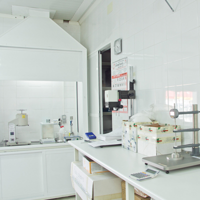

Actualmente es imprescindible tener el marcado CE, obligatorio para todas las aplicaciones en los países de la Unión Europea. El marcado CE exige, para cada campo de aplicación y función que va a cumplir, una serie de ensayos y tenerlo garantiza que los valores aportados por el fabricante son reales.
En cada campo de aplicación y dependiendo de las funciones que van a cumplir se pide:
- H: Requerido para la armonización (obligatorio).
- A: Aplicable atodas las condiciones de uso.
- S: Aplicable a condiciones de uso específicas.
Las normas de aplicación según marcado CE son las siguientes:
- UNE-EN 13249 Geotextil para aplicación de carreteras.
- UNE-EN 13250 Geotextil para aplicación en obras férreas.
- UNE-EN 13251 Geotextil para uso en movimientos de tierra, cimentaciones y estructuras de contención.
- UNE-EN 13252 Geotextil para uso en sistemas de drenaje.
- UNE-EN 13253 Geotextil para uso en obras para el control de erosión.
- UNE-EN 13254 Geotextil para uso en construcción de embalses y presas.
- UNE-EN 13255 Geotexlil para uso en construcción de canales.
- UNE-EN 13256 Geotextil para uso en la construcción de túneles y estructuras subterráneas.
- UNE-EN 13257 Geotextil para uso en vertederos de residuos sólidos.
- UNE-EN 13265 Geotextil para uso en proyectos de contenedores de residuos líquidos.

 retroceder
retroceder